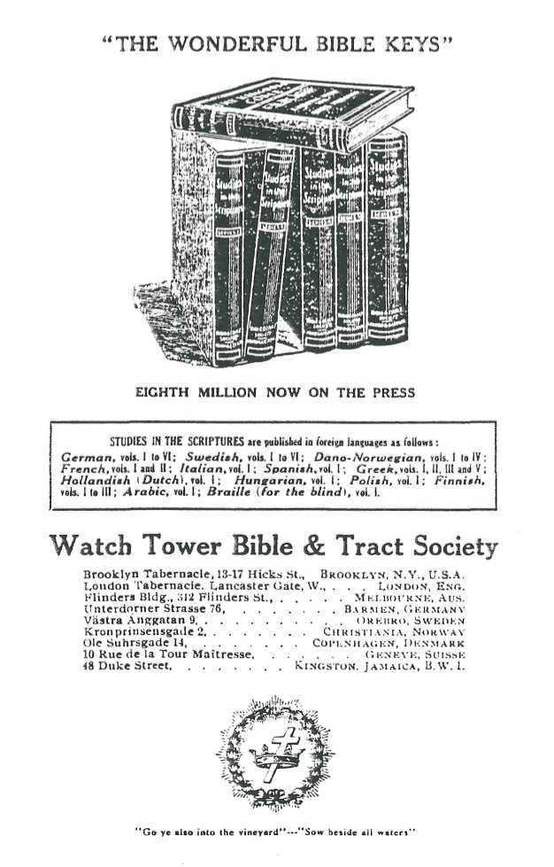

“HE THAT REAPETH RECEIVETH WAGES AND
GATHERETH FRUIT UNTO LIFE ETERNAL”
WATCH TOWER BIBLE A TRACT SOCIETY 13 — 17 Hicks Street BROOKLYN, N. Y-, U. S. A.
1912
OUR ACTIVE COLPORTEUR LIST
We like to think of all the friends of the Truth as being Colporteurs at heart, even though not privileged to engage actively in this blessed harvest work which the Lord has so greatly favored. Our Colporteur list has grown to over seven hundred, but many- of these dear friends, who originally started in with the intention of giving all or a considerable portion of their time, have met with disappointments and been unable to fulfill the desires of their hearts in this regard. We appreciate the love and interest of all these, but for practical purposes it has become necessary for us to trim down this list, so that it will contain only the Active Colporteurs. This does not signify that the others may not do all they can, but merely means that those who are not active in the service, but who do what they can, will all be treated alike and served to the extent of our ability, but not by the regular Colporteur Department which handies the letters and fills the orders of the regular active workers.
Hereafter those recognized as active Colporteurs will be expected (l) To have definite written assignments of territory before sending in orders; (2) So far as reasonably possible to send orders for no less than twenty-five volumes of Studies IN the Scriptures in one order, and this order on regular order blanks supplied free by the Society; (3) they will be expected to make regular reports the first and fifteenth of each month on report blanks, also supplied free by us; (4) All such are requested to use the printed Colporteur envelopes supplied free, or if temporarily out of these to use another envelope, writing on the lower left corner the words, “ Colporteur Department.” Colporteurs desiring partners in the work should send postal card request for an aide. They will find the General Conventions very favorable opportunities for such alliances.
WHO ARE "SHARP SHOOTERS”
All are Sharp-shooters who do what they can to sell the Scripture Studies amongst friends ami neighbors. Colporteurs take and work territory systematically, giving a part or all of their time. Sharp-shooters who order 20 volumes at a time by express or 40 copies by freight, charges collect, are granted Colporteur rates, viz., 16c. each for any of the Scripture Studies volumes. For less quantities, see The Watch Tower, p.2. We trust that all the deeply interested of the Tower list not Colporteurs are active Sharpshooters. • All towns of less than 300 population are open to such for regular canvassing without definite assignment.
We are sure that all the dear friends will be glad to assist in any manner, and a compliance with these suggestions will be one way of assisting the office force.
EVERY ONE who sells a copy of Studies in the Scriptures, Vol. I., preaches, through its sixteen chapters, sixteen sermons to the purchaser, and thus gives hint the Truth in a more lasting form than is furnished by any other method; for these sermons are preserved for his future study and reference, as well as for the instruction and comfort of others, of his family or friends, who may have access to the book. It will also doubtless prove a blessing to many during the troublous time coming, who will then seek in vain in the ordinary channels of religious teaching for some solution of the problems of the day, who will then be ready to accept the Divine rented}'—the Kingdom of God—and will seek instruction concerning it. While the contents of the first volume are specially commended to new readers, as giving an outline of God’s great plan of redemption, the succeeding volumes are commended as sustaining the presentations of the first volume and as supplying, in addition, the “filling" which completes and beautifies the whole. Indeed, though we seek first to present Vol. I, several instances have come to my observation which proved that some have been awakened by the reading first of the second and some by the third volume.
This ministry (service of the Truth) is not only the best way in which you can employ your talents, but is almost the only way you can preach without being a charge dependent on somebody—unless the Lord entrusted you with the talent of wealth before calling you into the service of the “ Glad tidings of great joy, which shall be unto all people.”
Even if you have a talent for public speaking, you can seldom exercise it conscientiously; for nearly all places of worship are consecrated to some particular sect or creed, and you cannot get a hearing for the full truth. “ Street preaching,” even, is no longer practicable, for the reason that intelligent people usually refuse to give ear.
The Colporteur work. then, seems to be the most practical way open for preaching the Gospel. Those who listen to the preaching of the printed page, in the quiet of the leisure moments of the home, with Bible and other helps at hand to prove " whether these things be so,” have the Truth more thoroughly impressed upon their minds than would be possible by the mere hearing of the same truths in an oral discourse. And the Spirit of the Truth is more ami more stirring up the saints to appreciate this fact and to engage in the circulation of the
4 SUGGESTIVE HINTS printed page. Some do so in one way and some in another, according to varying circumstances. Some send books to their friends and write letters to enkindle a desire to study them. Others manage to spare one, two or three half-days each week, to canvas their own ami neighboring towns: and an increasing number are arranging their affairs, where it is possible, so as to give their entire time and energy to this method of spreading the Truth.
The amount of the energy and the measure of the success of these self-sacrificing servants of the King is well attested by the fact that the First Volume of Studies in the Scriptures is now (1912) in its fifth million, and the demand continues.
These noble Colporteurs, going from house to house in nearly every city and town and village, forcibly remind one of the method of preaching adopted at the First Advent. Our Lord, passing by the Synagogues, Priests and Pharisees, sent His humble disciples from house to house and from city to city' to proclaim the message: “The time is at hand; repent, and believe the good tidings.’’ How really great and honorable was the service; yet how despised, doubtless, by the priests of nominal Israel, were those true members of the “ royal priesthood! ” *
The Colporteur work is no longer an experiment. I f your heart is full of the glad tidings and anxious to bless others, and if your desire is thus to serve the Lord, you can surely succeed, unless you have some unusual natural disqualifications, or are obligated to others. The following suggestions will be helpful, and. if followed, will the more quickly make you proficient. Whatever may be your success or failure at the start, keep balanced and trust in the Lord, and go on, studying every failure and profiting by it. Remember that you have the very books that all would want if they really understood them, and were free from prejudice. Remember, too, if you seem to reach but few deeply interested ones, that the Church as a whole is but a “ little flock,” and that it is a great privilege to find, and to “seal ” with the Truth (Rev. 7:3), even one saint in a day or one in a week. Remember, too, that some of the books purchased by the disinterested may, and often do, reach interested ones through them, and that those who at first oppose often become staunch advocates afterward. And above all remember that God’s promise is that if you are faithful, ” your labor is not in vain in the Lord.” Go forth to the Harvest prayerfully, desiring simply the Lord's honor and approval, and enjoying the privilege of carrying to others the same draught of comfort which so greatly consoled your own heart. Going thus you cannot fail. God will surely grant you such desires.
HOOSE A FIELD or two that you would prefer, anil then write to the Tower office to know whether the territory is open to you, or which place near it would be open to you. Always choose small places to begin with, as more skill is required in the cities.
Upon receiving the necessary directions regarding your field of labor, select one town as a center or base of operations, where, you can most conveniently get your mail, books, etc.
After gaining an idea of the "lay of the town ” you are to canvas, and mentally dividing it so that you can tell where yon have and where you have not been, take your memorandum-book and pencil, some of the No. 54 and No. 66, Old Theology tracts (which we supply free for distribution), and your sample book of Studies in your hand, and start out with a heart full of courage, strongc in the realization that your service is to God. and that He is with you to sustain you. If canvassing a neighborhood of foreign population, carry also a supply of Bible Students Monthly in the prevailing language; and endeavor to take an order for Vol. I, at least.
Seek to put those on whom you call to as little inconvenience as possible. To this end often go to side doors rather than front doors. Speak to the prospective purchasers wherever you find them, with their hands idle, or in the dough, or in the suds, without seeming to notice their employment. Your first thought should be, These people are much annoyed by agents’ calls, and I must, in a few words, before they have time to feel vexed, say something that will arouse their curiosity about the book, and at the same time show them that I have no long story to tell, and no desire to occupy their time.
Be earnest and dignified in your manner, never forgetting that you have just what every Christian needs. If they only knew what you have they would go miles to get it from you, anil if necessary they would pay a greater price for it. But they do not knowhow much they need the Truth, and you must 6 now to begin this work.
talk to them in a manner not calculated to offend or prejudice them. “ Be wise as serpents and harmless as doves," is our Master's caution. Yon must not think of telling the people all that the book teaches; if you tell all that the book tells, you will he obliged to stay a week at each house. And if you attempt to tell, in five minutes or an hour, all that it teaches, you will only spoil the subject and awaken prejudice on .one or more points, so that they would refuse to purchase or to read it at all. So, then, your skill must be exerted to awaken a curiosity; and you must not satisfy that curiosity, but point them repeatedly to the book you are offering them, assuring them that it answers all those questions and many more—and quotes the Scriptural proofs on every point. Sell to any and everybody. “ Sow beside all waters.” “ Thou knowest not which shall prosper, this or that." A great many Infidels have been reached and brought to the cross by the reading of the Studies ; and many books whose purchasers had no interest in the Truth have been guided by the Lord into the hands of His saints who were famishing for this “meat in due season."
If you have a bicycle it may be used to good advantage when delivering, by a device for holding the books in front or behind the rider.
We supply small motto cards to Colporteurs at 25c. for 48, postpaid. These are found advantageous in securing surer deliveries. Marking the delivery date on the back of one of these, the Colporteur pins it up, saying, “ I will present you with this as a reminder of our pleasant talk and of the valuable books I am to bring you. The date on the back will remind you, so that you may be sure to have the money ready then." We also supply (free) a beautiful little souvenir in the shape of a lithographed celluloid bookmark, with each set of Studies purchased. These should be carried by the Colporteur and presented to his customer when taking the order, as a partial delivery, thus securing the transaction.
Change of Tower address must be requested—not taken for granted. Leave change of address at Post Office also.
DO NOT TRANSFER TERRITORY. Only limited quantities of books are sent, except to Colporteurs in the territory we have assigned to them. Preserve Assignment to report thereon the number of books sold.
—
IL’ YOU WILL carefully learn and apply the following rules you will find them helpful:
(1) Approach the house or person to be colporteured with confidence and not as though you were an Intruder. If your mission were to present a $10.00 bill you would surely not feel yourself an intruder, but a benefactor. Remember that you are carrying to the people something of much greater value—a thousand fold.
(2) Meet your prospective customer smilingly: the world has trouble enough of its own.
(3) Be extremely polite, courteous. Show that you are well bred. Thus you not only exemplify Christian propriety but make a good impression, which paves the way for whatever you may have to say. Some will be pleased without manifesting It; others will reciprocate your smile and pleasant manner.
(4) Arouse curiosity respecting your errand. Your sample book should not be in sight, but preferably should be carried m some kind of canvas pocket sewed to the lining of your coat or hung by a strap over your shoulder, inside your coat, or, in the case of a sister, perhaps concealed in a shopping bag.
(5) Having gained attention and introduced yourself, the showing of your book will not lead them to break away—telling you that they have no time or Interest for such matters.
(6) Your next point is to arouse interest in your mission and what you have to show and explain to them. This you do by bringing to their attention particularly two subjects, as suggested below ; making your remarks as forceful as possible. It is better to comment liberally on one nr two points than to attempt a review of all the points In the Studies. Your hearer will properly enough understand that the other points you have not referred to are probably equally worthy of attention. Never say so much as to weary your hearer.
(7) By this time you will have created a desire for the work, and your next step must be to make it appear so cheap that they cannot resist the giving of the order. Close the sale as quickly as possible while they are in this attitude and before they can take a second thought and change the frame of mind you have thus molded.
(8) Avoid talking much after you have secured the order. Your manner should indicate that you have an Important mission requiring your attention; and that you realize that you must not intrude unnecessarily upon the time of your customer. Do not at any time attempt a theological discussion, nor an explanation of the Divine Plan ; to do so will be to hinder the work you are desirous of accomplishing. It Is because you believe that these Bible Studies are the very best method of Bible Instruction that you are giving your time to the colporteuring work.
By some peculiar mark on your order book you should be able to note which of the persons you canvassed gave evidence of interest In the Truth or seemed specially Interested and candid. These you should call upon a week or ten days after you have delivered them their books, to express the hope that they are reading and enjoying the Studies. When you do thus call be sure that you do not choke the beginners with too strong meat; rather confine yourself to the milk of the Word, and continually refer to the books and the great blessing you have received from them and the joy you are sure they will bring to all faithfm Bible students who will use them. Remember to avoid antagon-
izing. Agree with people so far as possible on every question. Some of the best of the Lord’s people have a ureal deal of combativeness naturally. But all need to keep this quality strictly under the control of love. The l«ord's representatives are peacemakers. not st rife-makers—” They that take to the sword shall perish by the sword,” are our Lord's words.
(9) Bn not make long calls. As a rule you will take an order In five minutes or less if you get one at all. There are, of course, exceptions to this rule, hut they should he few. In your canvass do not arouse antagonism by disagreeing. If you cannot express an agreement with what is said you are not bound to show dissent, but might say. •• I am glad to have you utter your opinion thus freely.” hastening on with your canvass and avoiding further delay by disputing. Bv earnestness of manner and voice and facial expression, put feeling into vour work. love the work, you rejoice in the privilege 01 serving the Lord, your heart is full of joy in view of vour favor in being a co-laborer In this Harvest work—let all this manifest itself; do not hide it.
Ix>ok your customers in the eves. Let them see that you mean every word that you are saving—that you are not colporteuring as a business, but as a ministry of the Truth.
Talk in a natural way and not as though you were ” speaking a piece.” Speak very distinctly: remember that any voice that Is new sounds strange and requires distinctness to be quickly understood.
(10) When you ask, ” May I take your address?” wait for their reply. If they hesitate and do not answer immediately, say something more, not on doctrine, but as to why they should have the book. Do not tell them in so many words that they ought to have it. but indirectly assist them to that conclusion, saying. ” It is quite phenomenal how much this work is appreciated ; it is being circulated at the rate of over 1,000 per day. Promulgated by a Bible Society, one can have confidence in its being something specially good. Only |1.98 for the complete set —you will agree it can be only a true Christian spirit that prompts such action.”
If they take the book out <»f your hands, don’t allow them to look through It without your saying something. Always keep talking, thus commanding the situation. Otherwise y’nu will lose any advantage gained, and something like this will be running through their minds: ” I don’t know wliat I want with this! We have plenty of books. Rent Is due next week and I’ve been spending too much money, anyway. No. I won’t take it.”—thus. ’ you see. spoiling all your previous Influences. Keep pressing the point, but In a yen tie way, as people don’t like to be driven.
If you do not secure the order with the sample method here suggested you need not try to do so by talking of other doctrinal subjects, as you would be almost certain to strike something that would bring controversy and hinder the order. Rattier, after presenting your arguments, if you do not get the order, turn your conversation to the binding of the book, its large circulation. how much It Is appreciated by those who are studying It, Its clear print, Hull finished nai>er specially favorable for the eyes, as the glossy finish tnrows a reflection, especially at night, etc., etc.
We advise that ynp make no sfiecial effort to sell Bibles. The Price List published In The Watch Tower at the close of each year Is net. Add your profit and do not forget to add postage.
Those who sell books merely to their friends and neighbors, or In places of less than 30rt )x»pulaiion. nerd nn assifjn nicnts and are style*) ” SHARP-SHOOTERS.” t See pane 2.)
A VERY SUCCESSFUL METHOD
pOOD MORNING! We are calling upon Christians of this vicinity. May I ask. Arc you Protestants? Thank you. Ours is a Home Mission work of a new character. The Bible and Tract Society is promulgating a new method of Bible Study which is commanding a great deal of attention amongst-all thoughtful Protestants. Under this method all the Lord's people may solve the most perplexing questions. May I have the pleasure of calling it to your attention? | Pause here briefly, seemingly to allow the hearer to object, but he careful not really to give time for an objection.]
The work (here take from your pocket and exhibit copy of Vol. 1) is entitled, "The Divine Plan of the Ages.” Some of the questions it makes plain have puzzled many of us all our lives. For instance, this Study, “ Why does God permit evil?” (Bend your book so that it will open readily at Chapter VII, and at other places you may desire to refer to. Avoid wasting time hunting places—open to them as though by magic.) As we look about us in the world we see sickness, pain, poverty, trouble everywhere, and know that it is only a matter of time until death grasps each of us. We have often wondered and perhaps inquired why our Heavenly Father permits these things. Why does He permit the evil? The answer is made very plain in this Study and you see how numerous arc the Scripture citations. You have the Word of the Lord on every matter. We might all guess, one perhaps as correctly as another, but there is only the one Word of God. The Bible shows that without sanctioning sin God has permitted it. It shows why God has allowed a reign of sin, death, sorrow, pain and tears 6.000 years. (Turning the leaves, point to the numerous Scriptural references as you talk. Reach now the first page of Chapter IX, and proceed.)
Here is another interesting subject—God’s provision for the heathen. What has become of all the millions of heathen who have died in ignorance? Many think they are lost; and of course we must all acknowledge that ignorance is not the road to heaven. But if that is true it means that the devil is more mighty than God—for nine-tenths of the human race have died without even hearing the name of Christ. This study shows that such a view is a great mistake; it points out from the Bible the heavenly Father’s loving provision for all the ignorant. Every one of these Studies you will find interesting and profitable.
This work formerly sold for $1.00 per volume and was cheap at that price as religious books generally sell; but this Bible Society having found it to be a great blessing to many have made its publication a specialty—scattering them everywhere at a merely nominal price within the reach of all. Over seven million copies are already in circulation. Christians of means often contribute liberally to the Society’s funds and this also explains the remarkable low price at which it is able to send out this work.
You will notice that these books are not thrown together, but well bound (opening and shutting book, evidencing its proper binding.) Only ?t.g8 for the full set of six!
The way we do is this: If you desire the work I take your address now, but you do not pay anything until I deliver them. I will bring them myself, so that there can be no mistake. You first examine all six and see that they are the same in size, binding and quality as this one, before paying me a cent—then the whole amount will be only $1.98. No further payment, or anything like that. I should like you to have a set in your home. May I take your address?
Thus many colporteurs find it best to introduce the full six volumes for $1.98. They take orders readily, for the cost of all is little more than the ordinary cost of one such book. If the}- cannot sell the six, they offer the first three for 98c.
When delivering it is recommended that the colporteurs open up the books, remarking after receiving payment and, before leaving, the importance of reading—studying the volumes, showing that you are interested not merely in the sale, hut in the results.
OCCASIONALLY, but very rarely, objections to colporteurins are raised by town or city officials who do not fully understand the object of our work nor the loyalty to God and selfsacrifice in His cause which actuates our dear colporteurs. Without investigation they are very apt to conclude that all bookselling is alike—" book peddling," as they sometimes call it. When once the nature of the work is understood It will very rarely Indeed be opposed. Indeed, even where the laws against ordinary book-selling are rigidly enforced it will generally be recognized that your work is not for profit, but is merely another form of preaching the Gospel—by the printed page—and that you are as really giving your lives in the service of the Lord as are any' ministers of the Gospel anywhere; and that your work, so far from being Injurious, and therefore worthy of being taxed. Is a beneficial work, that will surely redound to the proportionate good of the city.
A proper statement of the facts of the case will generally prove all that is necessary to secure to you not only permission, but the hearty co-operat.on of the city officials; but In case It should not. what then?
We advise in every case and at all times kind, Christian deportment. whatever may be the result of your interviews. Whatever others may do to you, see that you render not railing for railing, evil for evil, etc., but contrariwise, that you show forth the praise of Ulm who has called us out of darkness Into His marvelous light, that you let your light shine before men so as to glorify our Father In heaven.
Strictly speaking, although many city officials are not aware of It. all laws imposing a special tax on solicitors from other States are void, because in opposition to the laws of the United States. It is well for you to know this, whether you ever have occasion to use it or not. But let not this knowledge tempt you to quarrel with the city officials, nor to threaten them with the law; rather, If Interfered with, first endeavor to let the character of your work speak for itself, and if this be not sufficient, kindly call attention to the law on this subject, which prohibits any interference with interstate commerce or with the agents and representatives of any firm in any outside State. Call attention to the fact that you are not selling books out of hand, but taking orders for them In the name of the Watch Tower Bible & Tract Society, of Pennsylvania, for later delivery.
We give the legal decisions bearing on the subject—viz.: The case of Brennan vs. city of Titusville. Pa., decision of U. S. Supreme Court, dated April 30. 1894. by Chief Justice Bradley. Also the case of Bobbins vs. Taxing District of Shelby County. Tenn.. U. S. Supreme Court.
In some States the law permits the officers tn discriminate— exempt Bibles and religious books front tax. In others they are permitted to tlx a nominal tax and sometimes charge one cent to comply with the law. If your claims are disputed, keep your good temper, call upon the City Attorney, and request his kindly Interference on your behalf—still urging the character of your work more than the law.
With best wishes. Yours In Christ.
WATCH TOWER BIBLE & TRACT SOCIETY.
THE SCKlFTURE STUDIES SERIES is iimhmblrdly God-directed ** meat tn due season ” for all Truth-hungry people. It Is unsectarian, for all thinking chkistians. ami may protect many, young and old. from the flood of skepticism now rolling over the Church and the world.
Do not let your sample book go out of your hands more than you can avoid without giving offence. Hold it in your hand while talking and explaining. Be brief as you you can be; spend only two or three minutes In each house, ami if possible sell a copy In every Intelligent family—professing Christian or skeptic.
Originally these books sold for 50 cents each In paper covers and 11.00 each in cloth binding; but step by step they have been reduced until now our colporteurs can sell the cloth-bound edition at 35 cents, and make a good profit. These prices will readily convince the people that neither you nor the Society Is circulating these books for filthy lucre’s sake. Vols. tv.. v., vi. contain twice the amount of reading but will hereafter sell at 35 cents • Is 5*1.) each, same as Vols. 1, it, in. Price in leather binding, handsome gold edges, six volumes. 6ftc. (2s. lid. each.) Colporteurs are expected to give special effort to the cloth bound edition, as the most saleable and the most satisfactory to the public.
Remember to write the name of the town, or city, or postoffice, at the head of every new list In your memorandum-book, as we wish you to send to us the full addresses of all tu whom you sell. Send in report and list twice a month. (If any object to giving their names for fear It may be considered an endorsement of the book, take the street and number; that will do just as well.) We will later send tracts or other reading matter t<» these addresses, as a reminder to read the book if It has not already had attention. Some buy the book, lay it aside because of sickness, lack of lime, or carelessness, who. when something again calls their attention to it. take it up and read It with avidity. Order Report Blanks as you may need them, also tracts, free, as many as you can use judiciously.
Do not ” run over” territory to s|m>H It for yourself and others. Do not pick out good spots. Generally speaking you will have better success by taking every street or block in its order than if you try to pick. Make clean work: preach the glad tidings thus to rich and poor, learned ami unlearned, rememliering that it Is glad tidings for all people.
It Is advisable. In going from town to town, to make. If possible. a large or central town a base of operations from which to canvass surrounding smaller places. This not only properly exhausts the territory, but it saves your time. reduces your traveling expenses and enables you to take more orders. Remember, then, the old adage, ” A roiling stone gathers no moss.’*
Write to us about Territory and suggest your preference, naming your first, second and third choice—fount v ami State. You shall have your preference wherever practicable.
T IX H. S. A. and CANADA. Any volume <»f STUDIES IX THE SCRIPTURES (cloth > Ilie. per copy. charges odled. or 25c. per copy if sidp|»ed prepaid. Colporteurs sell these al 35c. each, or for the set of six books. The selling price may not be increased without our consent except when obliged to get the books by mail when luc. may be added for imstage. In small lots prepaid express is safer than mail service. We send no less than 40 copies by freight.
t IX'GREAT BRITAIN. Vc.lX I. It. in (cloth.). 6d per copy < sale price Is. 5d.) Voi^j. iv, v. vt (cloth). 4d per copy (sale price Is. Xd.) For clot h-inmnd books. b.\ parrels post or passenger train, add 4d for carriage on parcel of one copy; 5d for parcel of two copies, ami so mi; the limit for parcels post being ten copies of Vol- I. cloth bound. In one parcel, on which the postage is Is. Consignments weighing 28 lbs. or more are most economically sent per goods train, at your charges.
• ORDER XG BOOKS until you have tried and know how many you can can sell. Write your orders mi our REGULAR ORDER BLANKS only < which we supply free), and separate from your letter. Write very plainly, especially your name and address. State name of railroad or express company by which you desire the books shipped. More time must be allowed if shipment is to come by freight. Make each letter complete: do not trust tn our remembering former communications. Enclose Money Order or draft with each order, else we would soon have thousands nf dollars' worth of books out ami luck money with which to publish more. If you should wish tn return any bonks, in good order, we will refund the money
* A CREDIT. If you have been a subscriber to The Watch Tower fnr one \ear or more, and are desirous nf entering the colporteur service, but lack means to start, we would say “Gn ye also into the vineyard." take to <• orders, and we will supply you in. 2n. 40 or even 50 copies on credit at first. After the first credit tend remittance with each order and let this first credit stand for awhile, paying it off gradually as you are able.
' WATCH TOWER SPBSCRIPTIDXS. When canvassing make a note of any who ap|>ear to be earnest Christians. Endeavor tn see them again after delivering the Studies m inquire if t’w bave read, are interested, etc. Then show them a copy of The Tower, emphasizing the advantage of Its regular semi-monthly visits. The price is $1 (4s» per year, and we will allow vou one-half for commission on all new subscriptions, and IOC, (5d) fnr renewals.
r BOOKLETS. We have some booklets excellent for use by out Colporteurs: “Jewish Hopes and Prospects" "Tabernacle Shadows." "What say the Scriptures About Hell?" “What Sav the Scriptures About Spiritism?" and “The Parousia of Our Lord." Colpmteurs are supplied these bonks at 50<*. i 2s. 6d.) per dozen, ami sell them at 10c. (5,1. > each. A Magazine edition of Vou t. Scripture Studies in Watch Tower form (colored covers) is supplied at 5c. the copv. and mav be sold for 10c ( 5d).
r THE MAXXA COLPORTEURTXG is distinc t and separate from that for Studies in the Scriptures. Applv fnr territory separately A MAXX’A canvass following the other gives good opportunity for encouraging the use of the Studies. (See following page.)
This little book, with a text for each day in the year, an appropriate practical comment on the same from Pastor Rns-ell's pen, and a reference to The Watch Tower, year and page, where the fuller comment may be read, was not originally intended for the public. But it seems to fill a long-felt want as a “ spiritual breakfast food,” as some call it. \Ve hear of its blessed influence where used, and it is becoming quite popular.
Such a book will grow more valuable each year, not only for its helpful lessons from God's Word, but also for its record of the birthdays and autographs of our friends.
Aside from the daily blessing this will bestow in every family using it. we hope that many may have their religions sentiments quickened, and become interested in reading further expositions of holy writ from the same pen—later on.
SCATTERING .MANNA A SEPARATE WORK.
It would never do to attempt selling Manna with the Studies or booklets. All would be injured. But if a Colporteur so desire, he may, after finishing his canvass for the Studies, make a new canvass for Manna. It is probable, however, that to canvass for the Manna first and then for Studies and Tower would be still better. But if you are doing well with the Studies we advise that you remember the proverb, "Let well enough alone'”. Indeed, our thought is that the Manna would generally be hest handled by those whom we style " Sharp-shooters ”—who cannot leave their home city nor give all their time to regular Colporteuring. Do not forget, however, to consult us about territory before taking orders.
THE MANNA WHOLESALE AND RETAIL.
The Manna will be sold at 50c. in cloth binding, and the wholesale rates, open to ail Tower readers, will be as follows —cash with order :—
1 copy, postpaid, each..................... 35 cents.
10 copies or more, by express, prepaid........ 30 cents.
10 copies or more, by express, at your charges. 20 cents.
40 copies or more, by express, or freight..... 20 cents.
Please do not order these except as above. Our ability to supply them on bond paper at so small a price is based on our method of handling the books. Mo other such book is to he found at any price, and if produced by others would be sold at double our prices.
"Good morning! If you are at alt interested in religious matters, I would like to show you what some have styled “ Heavenly Breakfast Food.” It will cost you nothing to see it, and only take a few moments of your time, for 1 am in haste myself. (If now asked into the house, take from your pocket your sample “Manna” and continue.) This volume contains a Scripture text on a practical topic for every day in the year, with a very brief remark on its salient features—entirely unsectarian. To start each day in the year under such helpful influences results in untellable blessings. It is good for ten years, and all that blessing you may enjoy for ;oc., or only 5c. per year. The Bible and Tract Society believes that in circulating this “ Heavenly Manna " it is helping people to both spiritual and physical health: food digests better under good influences.
"Another feature is this (pointing to lined pages): An Autograph and Birthday Record of your friends, which by the end of ten years would make it priceless to you. May I take your order? I will deliver next----day: you pay then.
Perhaps you would want more than one copy—for friends near or afar. You could scarcely present a more suitable gift, or one which they would more appreciate.”
Be brief, and do not insist unduly. If they seem to hesitate open at their birth date, and read the text and comment.
A Colporteur of large experience, who found much difficulty in his deliveries, has hit upon a very successful expedient. He purchases of us some very small motto cards at tjc. for 24 cards (15c. by mail), and presents one of these after he has taken an order saying:—
Now I am going to present to you this pretty little inotto-card as a reminder of the grand books I am to bring you, so that you will not forget me, but have the money ready on that day. I tell you it is no easy job to carry even a few orders of these heavy books I And they feel doubly heavy if one must call a second time! There! I have written 10-25-12, the delivery day, on the back, and now will pin it here, where it will remind you of me and the pleasant conversation we have had on Bible themes.
EIGHTH MILLION NOW ON THE PRESS
Watch Tower Bible & Tract Society
“THE WONDERFUL BIBLE KEYS”
Brooklyn Tabernacle, 13-17 Hicks St., Brooklyn, N.Y., U.S.A. London Tabernacle. Lancaster Gate, W., . . . London, Eng. Hinders Bldg., >12 Flinders St., . .... M n norrne, Aus. Unterdorner Strasse 76..... . . Bar.men, Germany
Vastra Anggatan 9.......... . okeiiro. Sweden
Kronprtnsensgade 2........Christi ania. Nor wax
ole Suhrsgade U.......Coei.nii aghn, Denmark
10 Rue de la Tour Maitresse..... . Geneve, Suisse
48 Duke Street........Kingston. Jamaica, B\V. 1.
“Go ye also into the vineyard"—"Sow betide all waters"
STUDIES IN THE SCRIPTURES ire published io faeigo iaavuces is loUows :
German. roll. I Io VI; Su/ediih, vole. I Io VI; Dano-Norwtgian, vois. I Io IV: French,volt. I and II; Italian, vol. I; 5panioA,voi. I; Greek, vois. I, II. UI and V ; Hollandieh ' DufcAl.vol. I; Hungarian, vol. I: Poliah, vol. I; Finnish, vob. I Io III; Arabic, vol. I; Braille (for the blind), vol I.